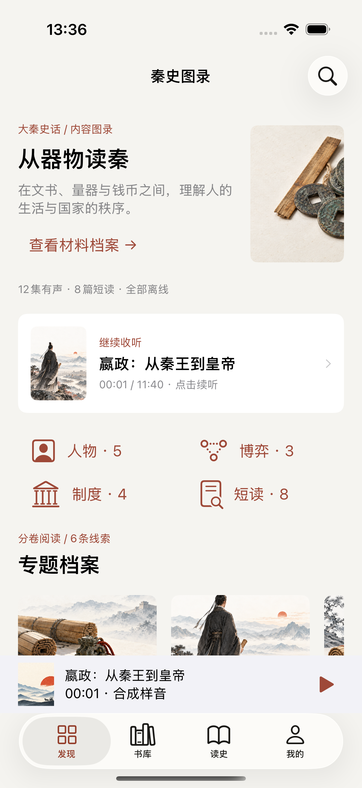
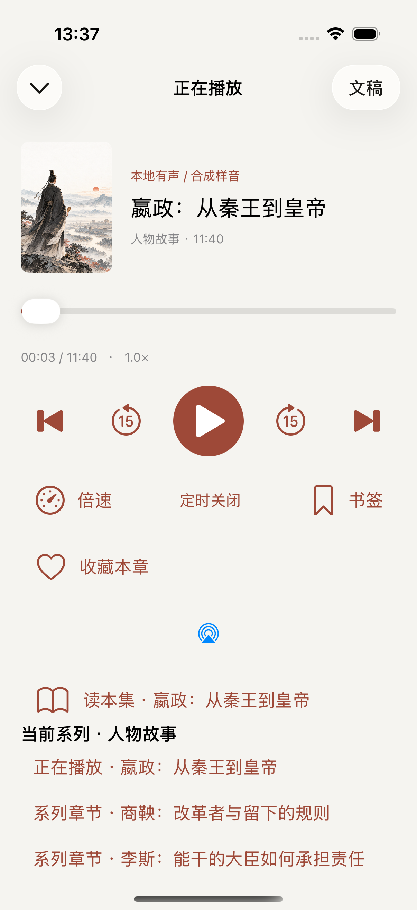
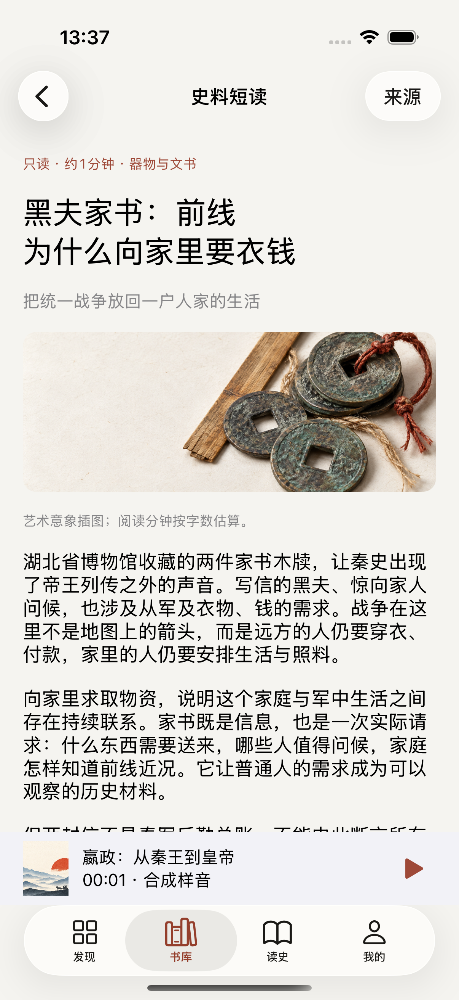
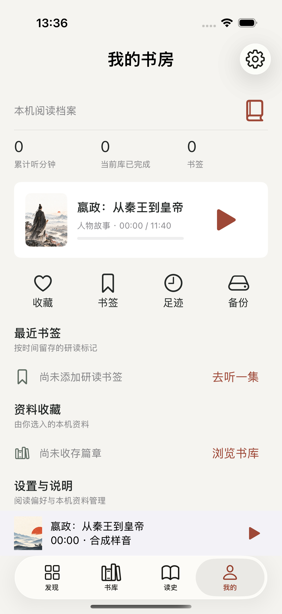

人物与命运
把人放回具体关系，观察选择的条件与后果。既看成就，也看权力、责任与材料的限度。
- 嬴政：从秦王到皇帝
- 商鞅：改革者与留下的规则
- 李斯、赵高与宣太后
大秦史话 / 离线有声与资料图录
从人物的命运，到制度里的日常。沿着文书、器物与历史线索，在听与读之间，慢慢展开一部秦史。
新版预览 · 正在准备更新本次预览展示原创文稿与系统合成声音。新版正在准备更新，本页暂不提供新版下载。

人物讲关键选择，博弈讲信息与利益，制度讲规则怎样落到普通人的生活。不同问题，各有篇章。
把人放回具体关系，观察选择的条件与后果。既看成就，也看权力、责任与材料的限度。
从变法的利益分配，到沙丘的继承与伐楚的决策。分析组织如何行动，不把历史变成厚黑教程。
爵位、县廷、役种与交易不再只是名词。跟随登记、核验、交付的过程，看见规则背后的人。
路线是既有长篇与短读的阅读顺序，不另计为新增作品。
以下来自新版 App 的真实界面，展示发现、播放、短读与个人书房。

本地播放、进度保存、倍速与睡眠定时。需要时打开同一集的完整文稿。

家书、虎符、钱币与刻石各有来处。来源说明离线保存，外部原文由你主动打开。

书签定位值得重听的片刻，收藏收存想再读的篇章。不必登录，真实记录自己的听读足迹。
大秦史话以原创讲述串联传世记载、出土文书与博物馆资料。古籍叙事、现代研究与解释性案例分别说明，不补写密室对白，也不把艺术插图当作考古证据。
使用帮助与内容反馈本次预览采用系统合成声音朗读原创文稿，非原版演播，不包含原作逐字稿。史料短读提供来源与阅读提示；配图为艺术意象，不作为历史现场的复原证据。